Provider Data Central
Enterprise onboarding platform
Designed cross-system workflows for provider onboarding.
View case study
Behind the mark
UX designer focused on enterprise products, AI-assisted workflows, and scalable design systems.
I bridge people, technology, and business goals by turning complexity into meaningful, human-centred experiences.
Featured work
Enterprise onboarding platform
Designed cross-system workflows for provider onboarding.
View case studyAgentic onboarding workspace
An AI-assisted review experience for human-in-the-loop decision support.
View case studySelected disciplines
No. Outside work it's photography, visual art, music, skateboarding, and a mean cinnamon granola. When I don't know a subject, I read into it far enough to be dangerous — or at least to argue about it properly.